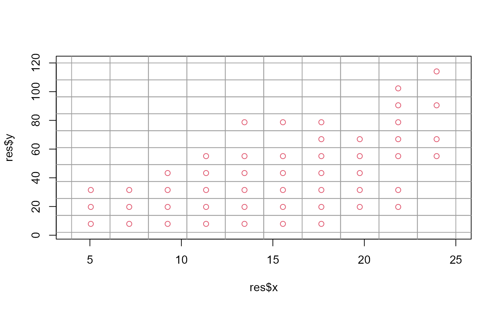
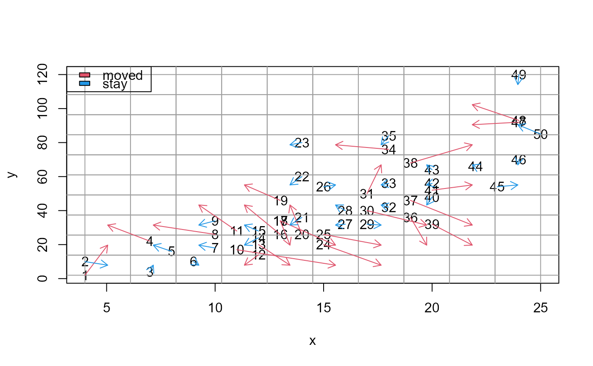

Arrange data points so that they do not overlap in a scatter plot.
nolap.Rdnolap This package aims to optimize arrangement by minimizing the movement of data points so that they do not overlap.
Arguments
- x
vector of x-coordinates
- y
vector of y-coordinates
- xdiv
number of x-axis divisions
- ydiv
number of y-axis divisions
- xlim
range of x-axis to be divided
- ylim
range of y-axis to be divided
- seed
initial value of the random number to be specified
- nseed
number of trials when initial random number is not specified
Value
xleft: a vector of left x positions.
ybottom: a vector of bottom y positions.
xright: a vector of right x positions.
ytop: a vector of top y positions.
x: x-coordinate of the center of the rectangular region
y: y-coordinate of the center of the rectangular region
xlims: x-axis dividing interval
ylims: y-axis dividing interval
ssd: total distance moved (sum of Euclidean distances)
seed: The initial value of the specified random number or the best initial value obtained by trial
is.moved: logical vector indicating whether each data point was moved from its original cell
Examples
x <- cars$speed
y <- cars$dist
res <- nolap(x=x,y=y,xdiv=10,ydiv=10,nseed=10)
print(res$seed)
#> [1] 3
plot(res$x,res$y,col=2,xlim=range(res$xlims),ylim=range(res$ylims))
abline(h=res$ylims,col=8)
abline(v=res$xlims,col=8)

# check movements
plot(x,y,xlim=range(res$xlims),ylim=range(res$ylims),type="n")
text(x,y,1:50)
abline(h=res$ylims,col=8)
abline(v=res$xlims,col=8)
arrows(x,y,res$x,res$y,length=0.1,col=ifelse(res$is.moved,2,4))
legend("topleft",legend=c("moved","stay"),fill=c(2,4))
